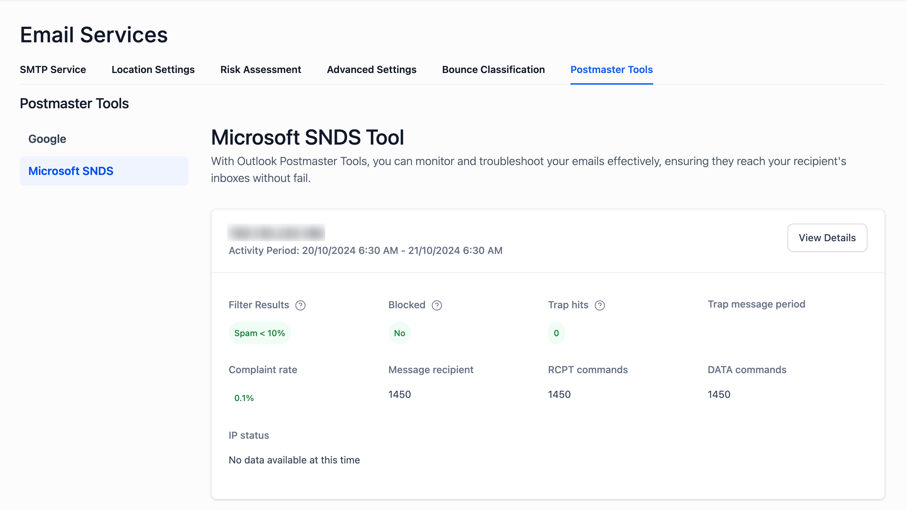
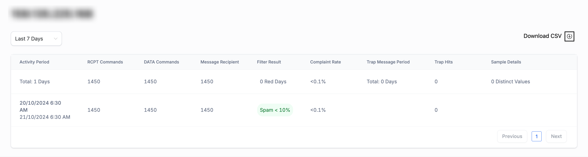

We are excited to offer a new feature for our customers who have purchased IP subscriptions from us—IP Status Monitoring through Microsoft SNDS (Smart Network Data Services) integration. This feature allows you to monitor your IP addresses' deliverability health, helping you avoid potential email deliverability issues.
TABLE OF CONTENTS
- What is Microsoft SNDS?
- How to Use the IP Status Feature
- Interpreting Key Metrics
- How to Handle IP Blocking or High Spam Rates
What is Microsoft SNDS?
Microsoft SNDS is a tool that provides insights into the email activity of your IPs on Microsoft platforms, such as Outlook and Hotmail. It offers essential information on IP health, spam complaints, filter results, and blocked status, ensuring that your emails reach the intended recipients.
How to Use the IP Status Feature
Access the IP Status Dashboard:
- Navigate to Settings > Email Services > Postmaster Tools > Microsoft SNDS.

- Navigate to Settings > Email Services > Postmaster Tools > Microsoft SNDS.
Select the IP Address:
- You will see a list of IPs with metrics such as:
- Filter Results: Displays the percentage of messages flagged as spam.
- Blocked Status: Shows whether the IP is blocked on Microsoft platforms.
- Trap Hits: Indicates the number of messages flagged by spam traps.
- Complaint Rate: The percentage of users who reported the emails as spam.
- You will see a list of IPs with metrics such as:
IP Health Overview:
- Clicking View Details provides an in-depth look at the selected IP, including:
- Activity Period: The timeframe of email activity.
- RCPT Commands and DATA Commands: The volume of messages processed.
- Spam and Complaint Rates: Helps you understand the IP reputation.
- Clicking View Details provides an in-depth look at the selected IP, including:
Download CSV Reports:
- For advanced reporting, click on the Download CSV button to export the detailed activity for further analysis.
Interpreting Key Metrics

Filter Results
- Spam < 10%: Your emails are largely bypassing spam filters. This is a good indicator of a healthy reputation.
- 10% spam or higher: Some emails are being classified as spam. Check your sending practices, content, and lists to avoid deliverability issues.
Blocked Status
- No: Your IP is not blocked. It can send emails without restrictions.
- Yes: Your IP is blocked due to possible spam behavior or policy violations. Immediate steps are required to investigate the root cause and resolve the issue.
Trap Hits
- 0 Trap Hits: Your IP is not interacting with spam traps. This is ideal for maintaining a clean sender reputation.
- One or More Trap Hits: Spam traps are receiving your emails. This suggests that your list may contain invalid or suspicious addresses. Clean your list to prevent further damage to your reputation.
Complaint Rate
- <0.1%: A complaint rate below 0.1% is excellent and shows that recipients are generally satisfied with your emails.
- >0.1%: A higher complaint rate indicates that recipients are marking your emails as spam. Review your email content and ensure your recipients have opted in.
RCPT Commands
- This represents the total number of recipients who received your emails. A higher value indicates heavy email sending activity. Monitor this to ensure your email volume aligns with your expected campaign size.
DATA Commands
- This metric tracks the total number of data payloads processed. It reflects the email messages transmitted by your IP address. Ensure the volume is consistent with your planned email campaigns to avoid triggering spam filters.
Trap Message Period
- This shows the number of days your emails were detected by spam traps. Ideally, this value should be 0 days. Any non-zero value requires immediate investigation.
Red Days (Filter Result Issues)
- 0 Red Days: Your email filtering metrics are in good standing, and emails are not being flagged as spam.
- One or More Red Days: Indicates that some days had higher spam rates or deliverability issues. Investigate the sending patterns for those periods and adjust accordingly.
How to Handle IP Blocking or High Spam Rates
If your IP is blocked or has a high spam rate:
Review Your Metrics
- Analyze recent activities, especially around trap hits and complaints.
Clean Your Mailing Lists
- Remove invalid or inactive addresses and ensure all recipients have opted in.
Request IP Delisting
- If your IP is blocked, submit a delisting request using the Microsoft Outlook Support page.